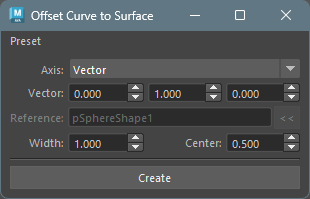
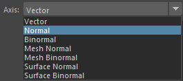
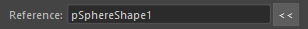

Offset Curve to Surface
Overview
This tool creates lofted NURBS surfaces by offsetting the CV positions of selected NURBS curves in specified directions.
You can choose offset directions from arbitrary vectors, curve normals/binormals, or reference mesh/surface normals/binormals.
How to Launch
Launch the tool from the dedicated menu or use the following command:
import faketools.tools.rig.offset_curve_to_surface.ui
faketools.tools.rig.offset_curve_to_surface.ui.show_ui()
Usage
- Select NURBS curve(s) (multiple selection supported).
- Select the offset direction from
Axis. - Configure options as needed.
- Click the
Createbutton to create the surface.

Options
Axis (Offset Direction)

Specifies the direction for creating the surface.
- Vector
- Offsets in an arbitrary vector direction.
- Specify X, Y, Z direction in the
Vectorfield.
- Normal
- Offsets in the curve’s normal direction.
- Uses the normal direction at each CV position of the curve.
- Binormal
- Offsets in the curve’s binormal direction.
- Uses the binormal direction (cross product of normal and tangent) at each CV position of the curve.
- Mesh Normal
- Offsets in the reference mesh’s normal direction.
- Requires specifying a mesh in the
Referencefield. - Finds the closest point on the reference mesh from each CV position of the curve and uses the normal direction at that point.
- Mesh Binormal
- Offsets in the reference mesh’s binormal direction.
- Requires specifying a mesh in the
Referencefield. - Uses the cross product of the mesh’s normal direction and the curve’s tangent direction.
- Surface Normal
- Offsets in the reference surface’s normal direction.
- Requires specifying a NURBS surface in the
Referencefield. - Finds the closest point on the reference surface from each CV position of the curve and uses the normal direction at that point.
- Surface Binormal
- Offsets in the reference surface’s binormal direction.
- Requires specifying a NURBS surface in the
Referencefield. - Uses the cross product of the surface’s normal direction and the curve’s tangent direction.
Vector (Vector Direction)
Only active when Axis is set to
Vector.
- Specify the offset direction vector using three spinboxes for X, Y, Z.
- The vector is automatically normalized.
- Default value is (0.0, 1.0, 0.0).
Reference (Reference Object)

Only active when Axis is set to
Mesh Normal, Mesh Binormal,
Surface Normal, or
Surface Binormal.
- Specify the reference mesh or NURBS surface.
- Select the reference object and click the
<<button to set it. - For
Mesh Normal/Mesh Binormal, specify a mesh. - For
Surface Normal/Surface Binormal, specify a NURBS surface.
Width (Surface Width)
- Width
- Specifies the width of the surface.
- Default value is 1.0.
- Range: 0.001 ~ 10000.0
- Center
- Creates the surface centered at this value relative to the creation direction.
- At 0.5, the surface has equal width in plus and minus directions.
- For example, if Width is 10.0 and Center is 0.5, the surface ranges from -5.0 to 5.0.
- Default value is 0.5.
- Range: 0.0 ~ 1.0
Image 8: Results with different Width and Center values
Notes
- Curve degree is automatically obtained from the selected curve.
- Works with both transform nodes and shape nodes selected.
- When multiple curves are selected, surfaces are created for each curve.
- Created surfaces are automatically selected.
- Error occurs if
Vectoris (0, 0, 0). - When selecting an Axis that requires a reference
object, always set an appropriate type of object in the
Referencefield.